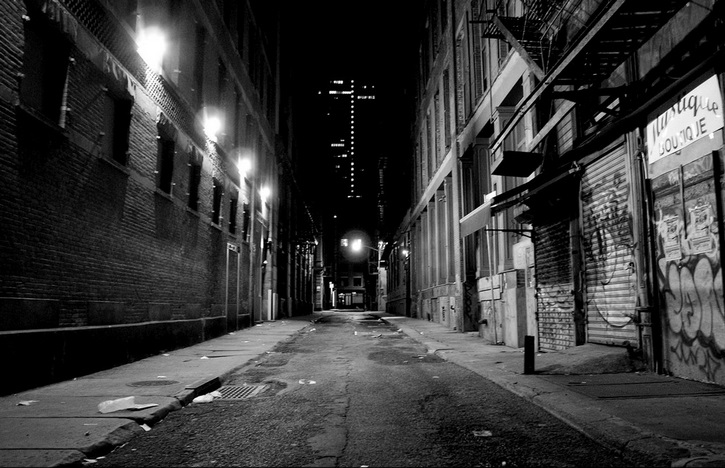

Setealem
Setealem é um universo paralelo, apenas avisando: o lugar não é bonito, é escuro, sujo, e as pessoas tem olhos negros e fundos como filme de terror.
Enfim, Desligue a Luz, Feche as Cortinas, Pegue sua Lanterna e Vamos se Assustar!
Vou falar do primeiro relato, então vamos lá, o nome da pessoa era gustavo ou outro nome, ele passou um momento paranormal nos anos 90, ele estava esperando um ônibus qualquer, porque qualquer Ônibus ia parar perto na casa dele, ele deu sinal a um Ônibus qualquer, ele entrou e começou a ler um livro, normal certo? aí ele percebeu que o Ônibus estava demorando muito, mas uma mulher cutucou ele e falou:
-Você não vai para setealem não é?
Ele não entendeu nada o que era setealem, aí ele percebeu que todo mundo que estava no Ônibus estava observando gustavo, aí começaram a gritar:
-DESCE DO ÔNIBUS DESCE!
Ate o Cobrador e motorista estavam gritando para ele descer,ele desceu e o Ônibus foi pra um caminho diferente.
Um dos relatos que chamaram bastante atenção, foi o relato de uma mulher chamada Antônia, que supostamente teria perdido a sua filha em Setealem. Aparentemente estava tudo normal, Antonia estava em sua casa, quando seu telefone começou a tocar, ao atender a ligação ela ouviu uma homem dizendo que ela precisava buscar a sua filha em uma escadaria em um certo condomínio, ela estranhou a ligação e questionou o homem.
- Escadaria? Condomínio, que condomínio? Minha filha está aqui em casa, como assim?
E o homem respondeu.
- Eu não sei senhora, ela não estava vestida com uma camiseta verde quando desapareceu? Se a senhora quiser reencontra-la e só a senhora ir até a escadaria do condomínio.
A mulher então começou a gritar com o rapaz ao telefone, dizendo que aquilo era um trote pois a sua filha estava lá com ela e até então não tinha acontecido nada demais, por este motivo, Antonia acreditou que tudo aquilo não se passava de um trote e então ela falou que iria ligar para a polícia e nesse momento a ligação caiu.

No dia seguinte a filha de Antônia foi passear com o seu pai e quando ela voltou ela estava muito assustada e vestia uma camiseta verde, a filha que voltou assustada contou para mãe que teria se perdido em uma prédio enquanto estava passeando com o seu pai, como ela não sabia onde estava começou a chorar e a gritar, até que segundo ela um homem que possuía os olhos amarelos apareceu para ajuda-la, o homem disse para a garotinha que eles estavam em Setealem.
Antônia então começou a achar que sua filha estava maluca contando toda aquela história, mas a menina jurou de pé junto de que tudo aquilo era verdade, inclusive ela falou que aquele homem de olhos amarelos teria ligado para a mãe dela, avisando de que ela estaria lá perdida naquele lugar, tudo isso teria durado algumas horas, isso aqui na nossa realidade, pois segundo a menina, ela teria ficado perdida em Setealem por aproximadamente 7 dias com aquele homem e para sair de lá esse homem teria levado a menina até uma escadaria, a qual ela teria descido e encontrado seu pai novamente e assim ele teria levado a menina de volta para casa.